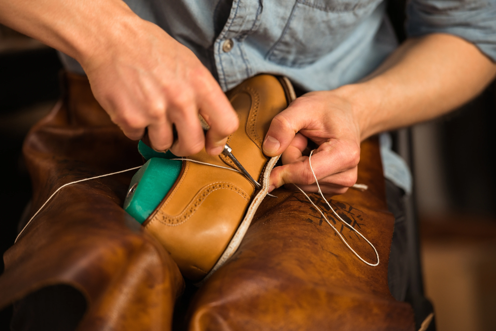
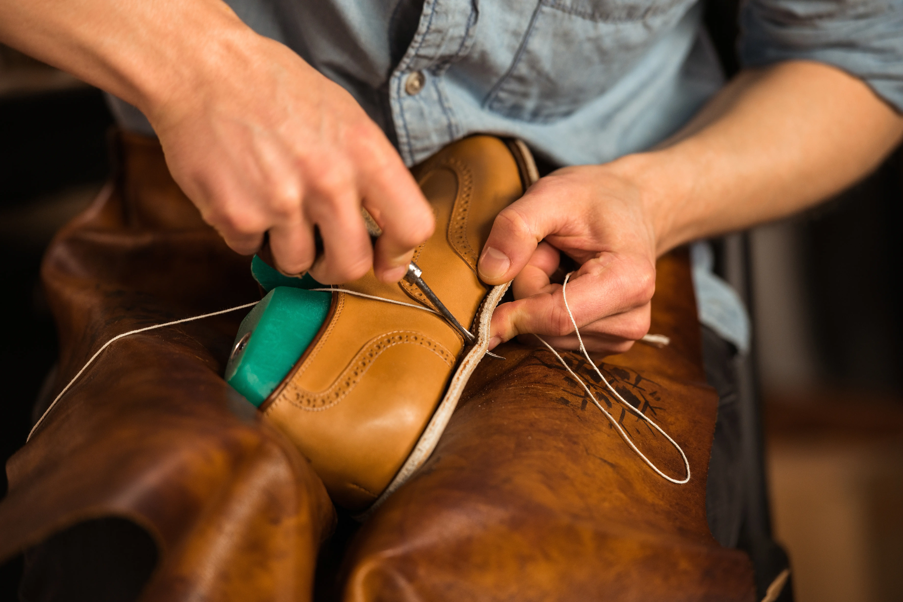

Página especializada en la reparación de ropa y calzado a domicilio. Combinamos oficio y detalle para dar nueva vida a tus prendas y zapatos, con un servicio cómodo, confiable y a tu puerta. Te ayudaremos a extender la historia de lo que usas, reduciendo el desperdicio y apostando por la sostenibilidad con estilo.
Crea tu cuenta
Solicita reparaciones de ropa y calzado desde la comodidad de tu hogar. Agenda, rastrea y paga tus servicios de forma fácil y segura.